Bar Lines
Bar lines are quite straightforward:
Heavy double bar (shown at the end of the piece or movement): 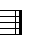 
Light double bar (shown at the end of a section): 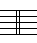
Bar lines are brailled after the last measure without a space. If more measures appear after a light double bar, a space is placed between the light double bar and the next measure.
Repeats
The repeat sign --  is used in braille music to indicate that the preceding measure is repeated exactly. The repeat sign is preceded and followed by a space: is used in braille music to indicate that the preceding measure is repeated exactly. The repeat sign is preceded and followed by a space:
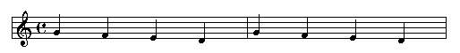
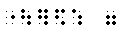
You can also use the repeat sign to replicate the first half of the measure:
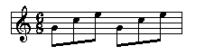
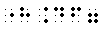
Repeat signs can also be used to replicate chords, which will be presented in the reading on chords.
Music also has repeats, indications that a specific section of the music is repeated for some number of times.
The music notation and their braille equivalents are shown in the table below:
Print Music
Notation |
Braille Music
Notation |
| 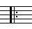 |
|
| 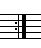 |
 |
| 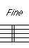 |
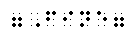 |
| 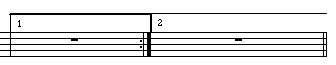 |
  First ending First ending |
|
Second ending |
| 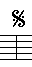 |
 Segno Segno |
| 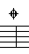 |
  |
D.S.
Da Segno, repeat from the sign |
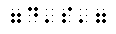 |
D.C.
Da Capo, repeat from the beginning |
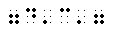 |
| D.S. al Fine |
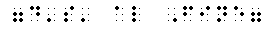 |
| 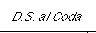 |
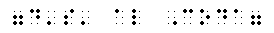 |
| 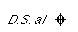 |
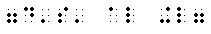 |
| 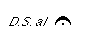 |
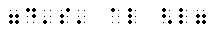 |
| 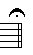 |
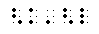 |
A simple example shows several of the notations shown in the table:
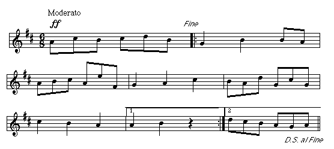
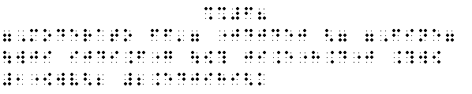
|  Tჸe $_hodor bARionlegitim@.
Tჸe $_hodor bARionlegitim@.